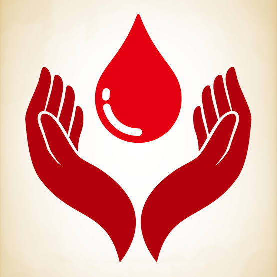

Informação clara que aproxima doadores dos hemocentros.
O Doe+ foi originalmente concebido no contexto acadêmico de TIAW (Trabalho Interdisciplinar: Aplicações Web) e refinado como uma plataforma informativa para facilitar o acesso às orientações sobre doação de sangue.
Por que o Doe+ existe?
Muitas pessoas têm vontade de doar sangue, mas desistem por dúvidas simples sobre requisitos, alimentação, intervalos entre doações ou por não saberem onde encontrar o hemocentro oficial mais próximo.
O objetivo do Doe+ é reunir essas orientações de forma objetiva e encaminhar o visitante diretamente aos canais oficiais dos centros de hemoterapia, sem burocracia ou cadastros intermediários.

Desenvolvimento e refinamento
Projeto idealizado originalmente na disciplina acadêmica de TIAW e atualizado para oferecer uma experiência limpa, objetiva e focada no encaminhamento direto aos hemocentros.